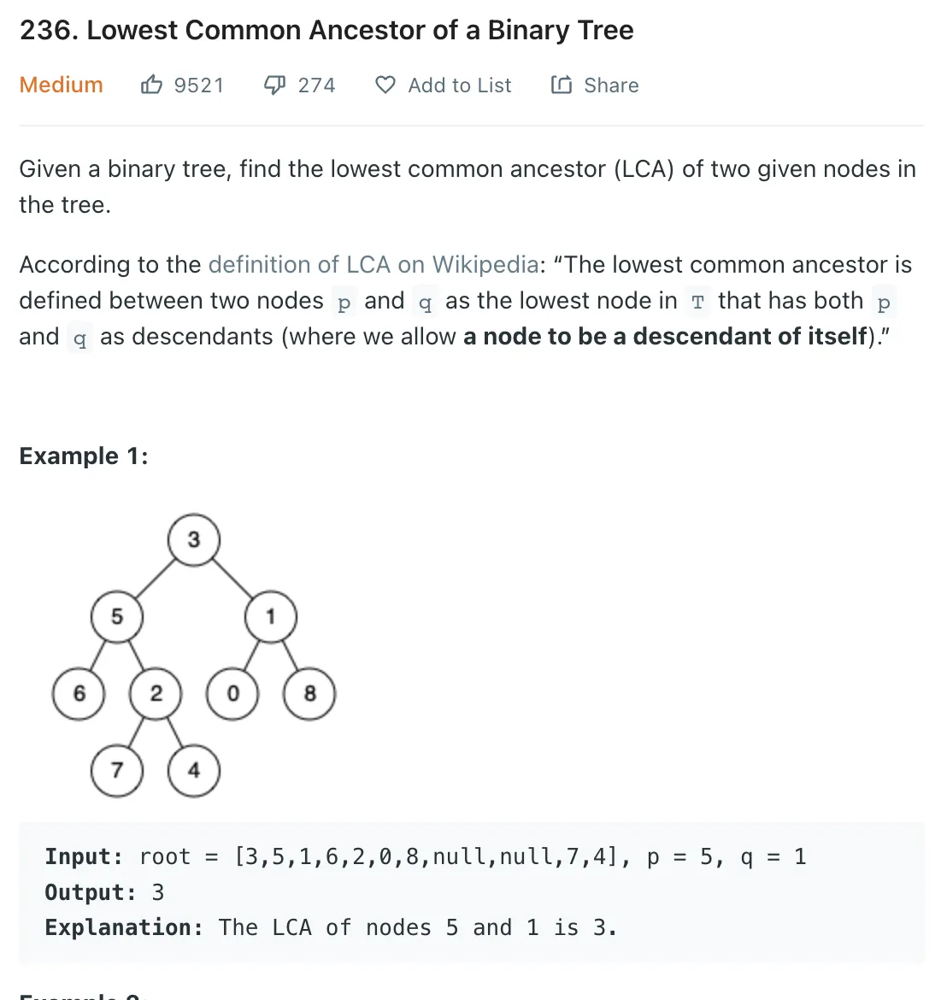
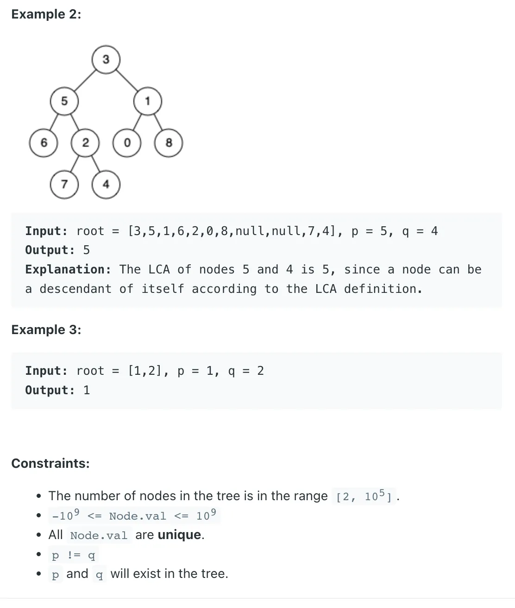

236. Lowest Common Ancestor of a Binary Tree
Question


先自己想想看 🤔Try it yourself first 🤔
✍🏽 My Solution
class Solution {
public TreeNode lowestCommonAncestor(TreeNode root, TreeNode p, TreeNode q) {
if (root == null || root == p || root == q) {
return root;
}
TreeNode left = lowestCommonAncestor(root.left, p, q);
TreeNode right = lowestCommonAncestor(root.right, p, q);
if (left == null) {
return right;
} else if (right == null) {
return left;
} else {
return root;
}
}
}
🧠 Thought Process
- Why did I choose this particular implementation?
- 參考力扣解法
- p跟q只有兩種可能，一個是p跟q分別在左右子樹，一個是p跟q在同一側
- if (left == null)說明那他一定在右側
Solution #1 [力扣-Recursive]
class Solution {
public TreeNode lowestCommonAncestor(TreeNode root, TreeNode p, TreeNode q) {
if(root == p || root == q || root == null)
return root;
TreeNode left = lowestCommonAncestor(root.left, p, q); //在左子樹找p和q
TreeNode right = lowestCommonAncestor(root.right, p, q); //在右子樹找p和q
if(left == null) // p和q在右子树里面
return right;
else if (right == null) // p和q在左子树里面
return left;
else //左右子树都找到p和q了，那就说明p和q分别在左右两个子树上，所以此时的最近公共祖先就是root
return root;
}
}
Explanation (in my words)
-
How does their solution work?
- 解题思路： 祖先的定义： 若节点 p 在节点 root 的左（右）子树中，或 p = root，则称 root 是 p 的祖先。
- 最近公共祖先的定義： 设节点 root为节点 p, q 的某公共祖先，若其左子节点 root.left 和右子节点 root.right 都不是 p,q 的公共祖先，则称 root 是 “最近的公共祖先” 。
-
根据以上定义，若 root 是 p, q 的 最近公共祖先 ，则只可能为以下情况之一：
p 和 q 在 root 的子树中，且分列 root 的 异侧（即分别在左、右子树中）； p = root，且 q 在 root 的左或右子树中； q = root ，且 p 在 root 的左或右子树中；
-
另一個比較好懂的思路 力扣作者：guohaoding
兩個節點 p,q 分為兩種情況：
- p 和 q 在相同子樹中
- p 和 q 在不同子樹中
從根節點遍歷，遞歸向左右子樹查詢節點信息 遞歸終止條件：如果當前節點為空或等於 p 或 q，則返回當前節點
- 遞歸遍歷左右子樹，如果左右子樹查到節點都不為空，則表明 p 和 q 分別在左右子樹中，因此，當前節點即為最近公共祖先；
- 如果左右子樹其中一個不為空，則返回非空節點。
- What is the space/time complexity of their solution?
- time: O(n)
- space: O(h)
Solution #2 [Iterative - 存儲父節點]
Runtime: 24 ms, faster than 6.50% of Java online submissions for Lowest Common Ancestor of a Binary Tree. Memory Usage: 49 MB, less than 7.66% of Java online submissions for Lowest Common Ancestor of a Binary Tree.
// 建立 HashMap 用遞歸，比較好寫
class Solution {
HashMap<TreeNode, TreeNode> parent = new HashMap<>();
public TreeNode lowestCommonAncestor(TreeNode root, TreeNode p, TreeNode q) {
// 建立一個有父節點的HashMap key=cur, value=父節點
dfs(null, root);
HashSet<TreeNode> path = new HashSet<>();
// 倒着还原 p 的路径，并将每个节点加入到 set 中
while (p != null) {
path.add(p); // [5,3]
p = parent.get(p);
}
// 倒着遍历 q 的路径，判断是否在 p 的路径中
while (!path.contains(q)) {
q = parent.get(q); // [1,3]
}
return q;
}
private void dfs(TreeNode parentNode, TreeNode cur) {
if (cur == null) return;
parent.put(cur, parentNode);
dfs(cur, cur.left);
dfs(cur, cur.right);
}
Solution #3 [Iterarive - 存儲父節點]
Runtime: 17 ms, faster than 13.46% of Java online submissions for Lowest Common Ancestor of a Binary Tree. Memory Usage: 49.6 MB, less than 5.11% of Java online submissions for Lowest Common Ancestor of a Binary Tree.
// 建立 HashMap 也是用迭代
class Solution {
public TreeNode lowestCommonAncestor(TreeNode root, TreeNode p, TreeNode q) {
Stack<TreeNode> stack = new Stack<>();
HashMap<TreeNode, TreeNode> parent = new HashMap<>();
stack.push(root);
parent.put(root, null);
//将遍历过程中每个节点的父节点保存起来
while (!parent.containsKey(p) || !parent.containsKey(q)) {
TreeNode cur = stack.pop();
if (cur.left != null) {
stack.push(cur.left);
parent.put(cur.left, cur);
}
if (cur.right != null) {
stack.push(cur.right);
parent.put(cur.right, cur);
}
}
HashSet<TreeNode> path = new HashSet<>();
// 倒着还原 p 的路径，并将每个节点加入到 set 中
while (p != null) {
path.add(p);
p = parent.get(p);
}
// 倒着遍历 q 的路径，判断是否在 p 的路径中
while (q != null) {
if (path.contains(q)) {
break;
}
q = parent.get(q);
}
return q;
}
}
Solution #4 [中序遍历循环简单写法]
Runtime: 13 ms, faster than 28.56% of Java online submissions for Lowest Common Ancestor of a Binary Tree.
Memory Usage: 47 MB, less than 75.72% of Java online submissions for Lowest Common Ancestor of a Binary Tree.
class Solution {
public TreeNode lowestCommonAncestor(TreeNode root, TreeNode p, TreeNode q) {
Stack<TreeNode> stack = new Stack<>();
TreeNode res = null;
int deep = 0;
while (true) {
while (root != null) {
stack.push(root);
root = root.left;
}
TreeNode cur = stack.peek();
if (stack.size() < deep) {
res = cur;
deep = stack.size();
}
if (cur == p || cur == q) {
if (deep == 0) {
deep = stack.size();
res = cur;
} else {
return res;
}
}
stack.pop();
root = cur.right;
}
}
}
Explanation (in my words)
- How does their solution work?
- 中序遍历循环时，如果找到其中一个指定节点，就记录当前节点，并在遍历途中更新为其父节点，遍历到另一个指定节点时即可返回记录的节点，不需要遍历完整棵树。 因为中序遍历是先遍历左子树，再遍历当前节点，再遍历右子树，那么一定是先遍历到左侧的指定节点，然后遍历到公共祖先，然后再遍历到右侧指定节点，因此只需要在遍历到左侧指定节点时记录下当前节点，并在遍历途中树的深度变浅时更新记录，那么在遍历到右侧指定节点时，记录的节点即为公共祖先。
- https://leetcode.cn/problems/lowest-common-ancestor-of-a-binary-tree/solution/zhong-xu-bian-li-xun-huan-jian-dan-xie-f-w2ch/
Solution #5 [王爭]
Runtime: 7 ms, faster than 80.56% of Java online submissions for Lowest Common Ancestor of a Binary Tree.
Memory Usage: 43.3 MB, less than 95.25% of Java online submissions for Lowest Common Ancestor of a Binary Tree.
class Solution {
private TreeNode lca = null;
public TreeNode lowestCommonAncestor(TreeNode root, TreeNode p, TreeNode q) {
dfs(root, p, q);
return lca;
}
// 遍歷root，看有多少p和q
private int dfs(TreeNode root, TreeNode p, TreeNode q) {
if (root == null) return 0;
int leftContains = dfs(root.left, p, q); // 求左子樹包含多少個
if (lca != null) { // 找到lca提前退出
return 2;
}
int rightContains = dfs(root.right, p, q); // 求右子樹包含多少個
if (lca != null) { // 找到lca提前退出
return 2;
}
int rootContains = 0;
// 看我自己(root)是不是p和q
if (root == p || root == q) {
rootContains = 1;
}
// 左子樹包含1個p或q && 右子樹包含1個p或q
if (rootContains == 0 && leftContains == 1 && rightContains == 1) {
lca = root;
}
// 我自己包含1個p或q && 左/右子樹包含1個p或q
if (rootContains == 1 && (leftContains == 1 || rightContains == 1)) {
lca = root;
}
return leftContains + rightContains + rootContains;
}
}